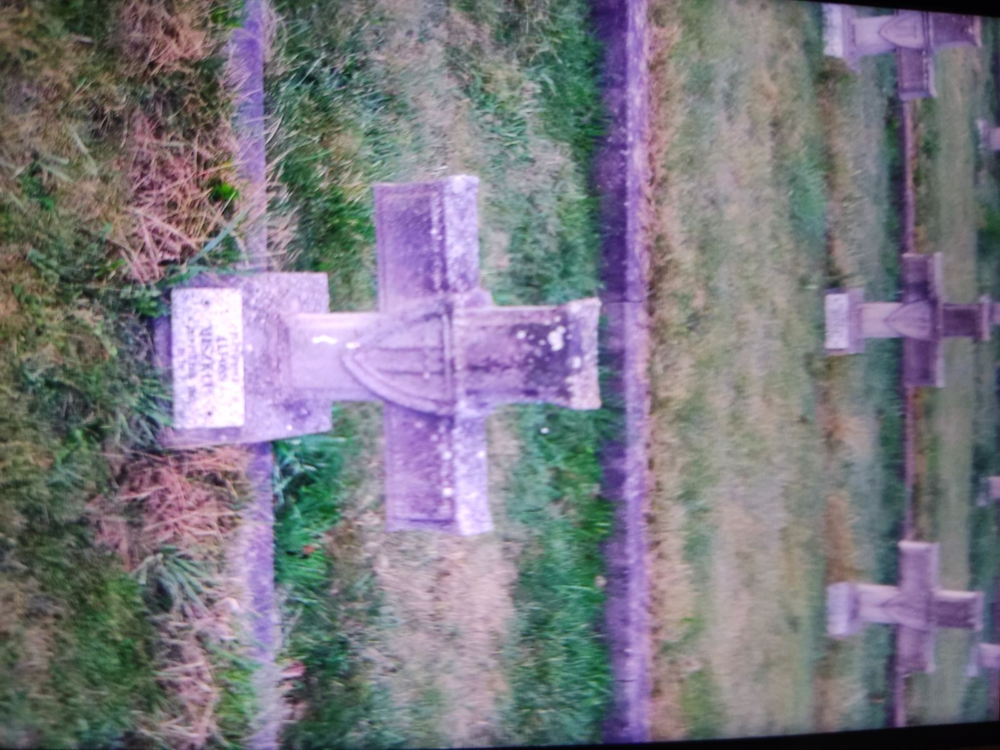
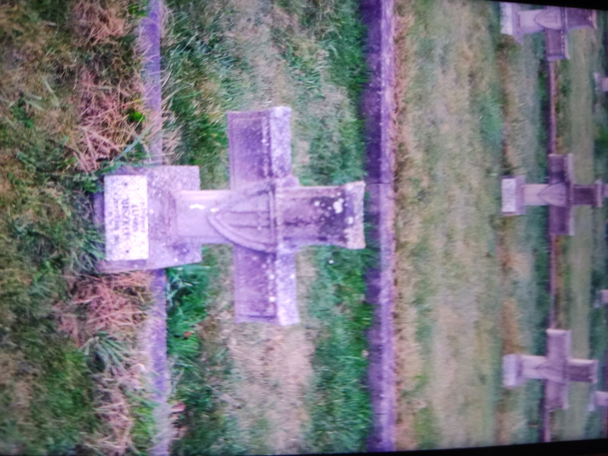

Макась Мария вместе со своим сыном Макась Александром во время немецкой аккупации беларуси 1941-1944
года учавствовали в портизанской борьбе против немецких захватчиков и состояли в рядах Ивенецкого подполья
воложенского района их выдали немцам и они были растреляны.